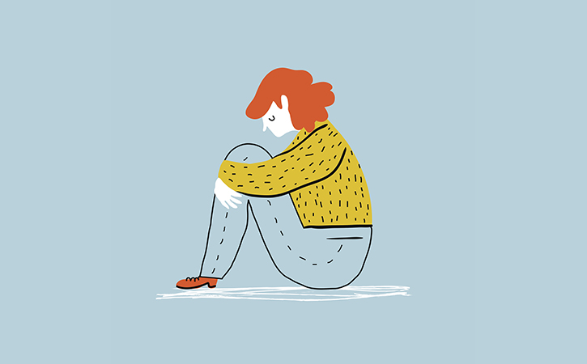
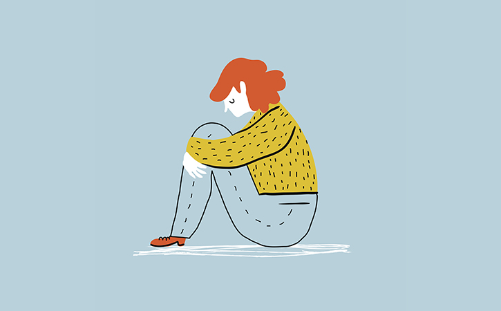
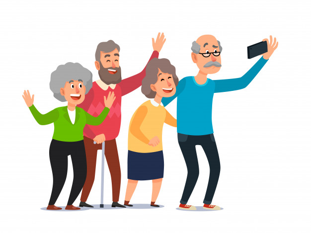
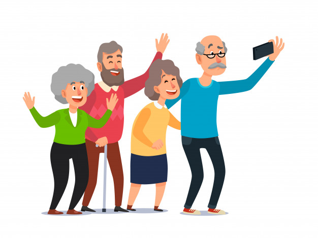

Pandemics can be stressful


The coronavirus disease 2019 (COVID-19) pandemic may be stressful for people. Fear and anxiety about a new disease and what could happen can be overwhelming and cause strong emotions in adults and children. Public health actions, such as social distancing, can make people feel isolated and lonely and can increase stress and anxiety. However, these actions are necessary to reduce the spread of COVID-19. Coping with stress in a healthy way will make you, the people you care about, and your community stronger.
- Fear and worry about your own health and the health of your loved ones, your financial situation or job, or loss of support services you rely on.
- Changes in sleep or eating patterns.
- Difficulty sleeping or concentrating.
- Worsening of chronic health problems.
- Increased use of tobacco, and/or alcohol and other substances.
Stress during an infectious disease outbreak can sometimes cause the following:
Take care of your mental health
You may experience increased stress during this pandemic. Fear and anxiety can be overwhelming and cause strong emotions.
- Call 911
- Disaster Distress Helpline: CALL or TEXT 1-800-985-5990
- National Suicide Prevention Lifeline: 1-800-273-TALK (8255) for English
Get immediate help in a crisis
Everyone reacts differently to stressful situations
How you respond to stress during the COVID-19 pandemic can depend on your background, your social support from family or friends, your financial situation, your health and emotional background, the community you live in, and many other factors. The changes that can happen because of the COVID-19 pandemic and the ways we try to contain the spread of the virus can affect anyone.
- People who are at higher risk for severe illness from COVID-19 (for example, older people, and people of any age with certain underlying medical conditions).
- Children and teens.
- People caring for family members or loved ones.
- Frontline workers such as health care providers and first responders,
- Essential workers who work in the food industry.
People who may respond more strongly to the stress of a crisis include:
Take care of yourself and your community


Taking care of your friends and your family can be a stress reliever, but it should be balanced with care for yourself. Helping others cope with their stress, such as by providing social support, can also make your community stronger. During times of increased social distancing, people can still maintain social connections and care for their mental health. Phone calls or video chats can help you and your loved ones feel socially connected, less lonely, or isolated.